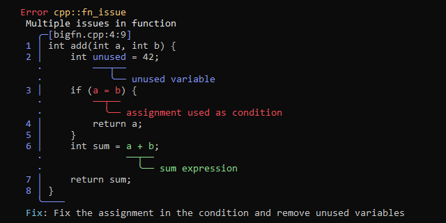

I made some nice progress since the first devlog for Caracal, and went on a side quest during the weekend.
References #
I got codegen for references working after some fighting with LLVM. They are also a steping stone to get methods working for type, since a hidden reference to the object is passed as first parameter for methods.
def doubler(x: ref i32)
{
x = x * 2;
}
def main()
{
x := 20;
printf("%d\n", x); // prints 20
doubler(ref x);
printf("%d\n", x); // prints 40
}Order independent declarations #
After I got the codegen for references done, I went and changed the type checker and codegen to allow for order independent declarations. This means a function can call a functions thats not appears later in the code. The way I do it is pretty obvious I think. I run a pass over the ParseTree and declare all functions and methods, and do the type checking after that. This might not be the best way to do it but it works for now.
def main()
{
x := 20;
printf("%d\n", x); // prints 20
doubler(ref x);
printf("%d\n", x); // prints 40
}
def doubler(x: ref i32)
{
x = x * 2;
}Multiple file support #
The previous changes allow me to support multiple files now, since I can just parse multiple files and then let the type checker do the first pass over all files.
Which means I finally could add the first file of the core library thanks to this. It currently only contains some extern functions like printf tho but its a start.
// extern_c.cara
#extern()
def puts(message: string) i32 {}// main.cara
def main()
{
puts("Hello, World!");
}CaraReport #
My next task was to get types working but I was struggling a bit with the LLVM codegen.
So I decided to do a little sidequest to create an error reporting library for C++ since I didnt find a good one before. There are quite a few popular ones in Rustland like codespan, ariadne and miette, but none for C++.
My favorite one out of those 3 are the errors generated by miette so I went to yakshave my own version with some changes. The main drawing code is roughly 1k lines of C++, way more than I wanted but it supports quite a few features.
Overall I'm pretty happy with the result, even if there are still bugs to fix.

Link: https://github.com/Caracal-Lang/CaraReport
Whats next #
I want to get types done next, the codegen should be close to working. What I also need are tests for the generated LLVM IR. I should also work on emitting errors, now that I got a nice error reporting lib.
Armin